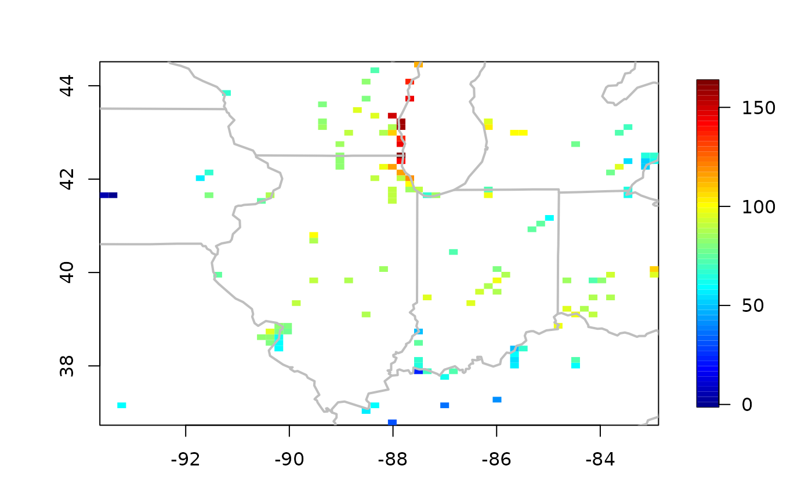
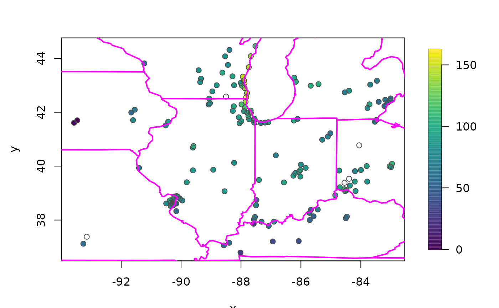
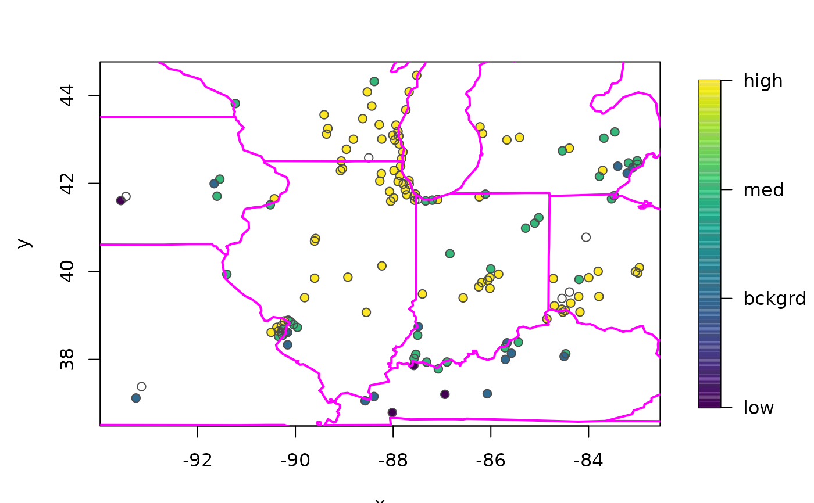
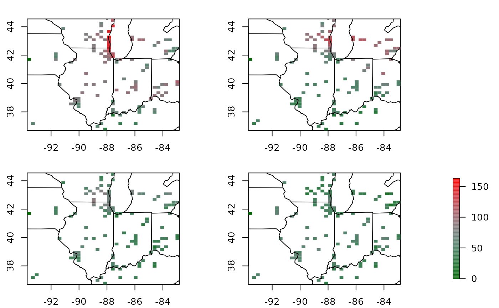
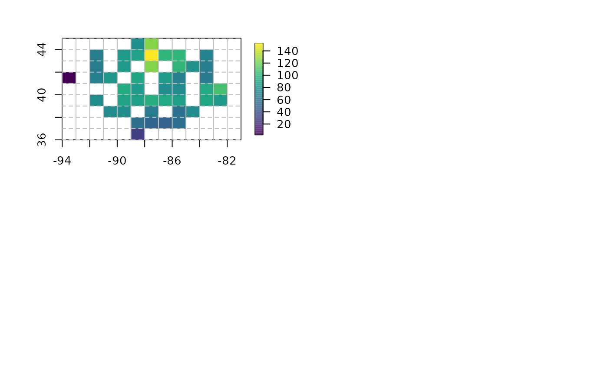

quilt.plot.RdGiven a vector of z values associated with 2-d locations this function produces an image-like plot where the locations are discretized to a grid and the z values are coded as a color level from a color scale.
quilt.plot(x, y, z, nx = 64, ny = 64, grid = NULL,
add.legend=TRUE,add=FALSE, nlevel=64,
col = tim.colors(nlevel),
nrow=NULL, ncol=NULL,FUN =
NULL, plot=TRUE, na.rm=FALSE,
boundary.grid = FALSE, ...)
bubblePlot(x, y, z, col = viridis::viridis(256),
zlim=NULL, horizontal = FALSE,
legend.cex = 1, legend.lab = NULL, legend.line = 2,
legend.shrink = 0.9, legend.width = 1.2, legend.mar =
ifelse(horizontal, 3.1, 5.1), axis.args = NULL,
legend.args = NULL, size = 1, add = FALSE,
legendLayout = NULL, highlight = TRUE, highlight.color
= "grey30", ...)A vector of the x coordinates of the locations -or- a a 2 column matrix of the x-y coordinates.
A vector of the y coordinates -or- if the locations are passed in x the z vector
Values of the variable to be plotted. For bubblePlot if a character or factor will be assigned colors based on the order of appearance.
Number of color levels.
Number of grid boxes in x if a grid is not specified.
Number of grid boxes in y.
Depreciated, same as nx.
Depreciated same as ny.
A grid in the form of a grid list.
If TRUE a legend color strip is added
If FALSE add to existing plot.
Color function or the color scale for the image, the default is the tim.colors function -- a pleasing spectrum for quilt.plot and the modern and versitle viridis for bubblePlot
If FALSE the passed grid is considered to be the midpoints of the grid cells. If TRUE then these are assumed to define corners and the number of boxes is one less in each dimension.
If FALSE just returns the image object instead of plotting it.
The function to apply to values that are common to a grid
box. The default is to find the mean. (see as.image).
If FALSE NAs are not removed from zand so a grid box even one of these values may be an NA. (See details below.)
Size of bubble dots in cex units. Can be a vector to procduce different size points in the scatterplot.
Numerical range to determine the colorscale. If omitted the range of z is used.
for quilt.plot arguments to be passed to the image.plot
function. For bubblePlot arguments to be passed to the plot
function if add=FALSE, the default and to the points
function if add=TRUE.
If false (default) legend will be a vertical strip on the right side. If true the legend strip will be along the bottom.
If TRUE will add a circle around the "bubble" in the color
highlight.color.
Color of circle, default is a darker grey.
Character expansion to change size of the legend label.
Label for the axis of the color legend. Default is no label as this is usual evident from the plot title.
Distance in units of character height
(same as in mtext)
of the legend label from the
color bar. Make this larger if the label collides with the color axis labels.
Width in characters of legend margin that has the axis. Default is 5.1 for a vertical legend and 3.1 for a horizontal legend.
Amount to shrink the size of legend relative to the full height or width of the plot.
Width in characters of the legend strip. Default is 1.2, a little bigger that the width of a character.
A list giving additional arguments for the axis function used to
create the legend axis. (See examples in image.plot.)
The nuclear option: arguments for a complete specification of the
legend label, e.g. if you need to the rotate text or other details. This is in the form of a list and is just passed to the
mtext function and you will need to give both the side and line arguments for positioning. This usually will not be needed.
(See examples in image.plot .)
The list returned by setupLegend that has the legend information about positioning.
quilt.plot
This function combines the discretization to an image by the function
as.image and is then graphed by image.plot.
By default, locations that fall into the same grid box will have their
z values averaged. This also means that observations that are NA will
result in the grid box average also being NA and can produce unexpected
results because the NA patterns can dominate the figure. If you are
unsure of the effect try na.rm = TRUE for a comparison.
A similar function exists in the lattice package and produces spiffy looking plots. The advantage of this fields version is that it uses the standard R graphics functions and is written in R code. Also, the aggregation to average values for z values in the same grid box allows for different choices of grids. If two locations are very close, separating them could result in very small boxes.
Legend placement is never completely automatic. Place the
legend independently for more control, perhaps using image.plot
in tandem with split.screen or enlarging the plot margin
See help(image.plot) for examples of this function and these
strategies.
bubblePlot Why was this function was written for fields? Certainly ggplot has many options for this kind of figure. To quote Tim Hoar a gifted data scientist and software engineer at NCAR: "because we could". It is a crisp implementation of this type of plot using lower level fields functions. The user may choose simply to use the source code as the basis for a more detailed function. However, this is also a quick plot to introduce in teaching.
This function is experimental in the sense it explores setting
out a plotting region in advance of the actual plotting using R base graphics.
See the functions setupLegend and addLegend
for more details. Other graphics approaches in R such as ggplot determine
the plotting regions and layout based on having the entire figure
specification at hand. Although this a comprehensive solution it also seems
overkill to just add a lone color bar to annotate a plot. Moreover, and the graphics lower level functions
to add the color bar legend are already available from the image.plot functio.
as.image, discretize.image, image.plot, lattice, persp, drape.plot,
data( ozone2)
# plot 16 day of ozone data set
quilt.plot( ozone2$lon.lat, ozone2$y[16,])
US( add=TRUE, col="grey", lwd=2)

bubblePlot( ozone2$lon.lat, ozone2$y[16,] )
US( add=TRUE, col="magenta", lwd=2)

# colors based on a factor or character vector
O3Levels<- cut( ozone2$y[16,], c( 0,40,60,80,Inf),
labels=c("low","bckgrd","med", "high"))
table( O3Levels)
#> O3Levels
#> low bckgrd med high
#> 4 16 40 86
bubblePlot( ozone2$lon.lat, O3Levels )
US( add=TRUE, col="magenta", lwd=2)

### adding a common legend strip "by hand"
## to a panel of plots
## and a custom color table
coltab<- two.colors( 256, middle="grey50" )
par( oma=c( 0,0,0,5)) # save some room for the legend
set.panel(2,2)
#> plot window will lay out plots in a 2 by 2 matrix
zr<- range( ozone2$y, na.rm=TRUE)
for( k in 1:4){
quilt.plot( ozone2$lon.lat, ozone2$y[15+k,], add.legend=FALSE,
zlim=zr, col=coltab, nx=40, ny=40)
US( add=TRUE)
}
par( oma=c(0,0,0,1))
image.plot(zlim=zr,legend.only=TRUE, col=coltab)

# may have to adjust number of spaces in oma to make this work.
# adding some grid lines and using the boundary.grid option
# note that in this case grid boxes drawn to match lon/lats
data( ozone2)
lon<- ozone2$lon.lat[,1]
lat<- ozone2$lon.lat[,2]
z<- ozone2$y[16,]
gridList<- list( x=-94 :-81,
y= 36:45 )
quilt.plot( lon, lat, z, grid= gridList, boundary.grid = TRUE,
col=viridis(256) )
# add some gird lines
xline( gridList$x , col="grey", lwd=1, lty=1)
yline( gridList$y, col="grey", lwd=1, lty=2)
